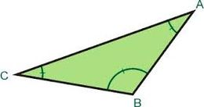

El triángulo obtusángulo se caracteriza por tener uno de sus ángulos interiores obtuso, eso quiere decir que el ángulo es mayor a 90°, por lo tanto, los ángulos internos restantes son menores a 90°.